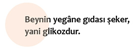
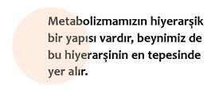

Beynin önemi

Teorik olarak hepimiz beynin çok önemli bir organ olduğunu biliriz. Ama yakından baktığımızda beynin önemli değil, en önemli organ olduğunu görürüz. Bundan dolayıdır ki doğa diğer organları kaburgalarımızla kısmen bir koruma altına almışken, beyne kafatasını bir zırh gibi geçirmiştir. Çünkü onun zarar görmesi, diğerlerinin de zarar görmesi anlamına gelir. Kalbin hiç durmadan günde 100 bin defa, yılda ise 40 milyon ve 70 yıllık bir ömürde üç milyar defa çarpmasını sağlayan beyindir. Bizler bunun için bilinçli olarak hiçbir şey yapmayız. Kalbin dakikada beş litre, saatte ise 300 litre kanı toplamda 96 bin kilometrelik damarlara pompalaması, her 20 ila 60 saniyede bütün kan hücrelerinin vücudu bir defa dolaşması, her alyuvarın bütün yaşamı boyunca bedeni 53 bin ila 173 bin defa dolaşması, her saniyede üç milyon alyuvarın yok olması ve bir sonraki saniyedeyse yeniden oluşması ve bütün bunların beyin tarafından gerçekleştirilmesi onun bedende neden bu kadar özel bir yere sahip olduğunun göstergesidir. Bedenin her hücresinde her an 100 bin kimyasal reaksiyon cereyan eder. Bedende toplamda 70 ila 100 trilyon hücre olduğundan yola çıkıp bu sayıyı 100 binle çarptığımızda hiçbir hesap makinesinin hafızasına sığmayacak kadar çok sıfırla karşılaşırız. Ama buna rağmen bütün bu reaksiyonlar her saniye vücutta meydana gelir ve biz bunun için hiçbir şey yapmayız. Yapılan araştırmalar, hücreler arasındaki iletişimin ışık hızından daha hızlı gerçekleştiğini gösteriyor. Bütün bunlardan sorumlu olan beyindir. Her saniye vücutta 10 milyon hücre ölür ve her saniye 10 milyon yeni hücre ürer. Sindirim için hangi enzimden ne kadar salgılanması gerektiği, idrar oluşumu için böbreklerimizden hangi miktarda kanın filtrelenmesi gerektiği, karaciğerin toplam 66 işlevinin her an yerine getirilmesi, bağışıklık sisteminin binlerce bakteri ve virüsü püskürtmesi gibi daha binlerce işlevin yegâne sorumlusu beyindir. Bunlar ve sayısız başka işlevlerinden dolayı beyin bedendeki en önemli organdır.
Beyin demokratik bir hukuk devleti gibi işler
Olağanüstü herhangi bir durum söz konusu olmadığında beynin iç işleyişi demokratik hukuk sistemine benzer. Bu tarz bir sistemde iktidar birbirini etkileyen birçok mercie dağıtılır. Demokratik bir sistemde bu merciler hükümet, siyasal partiler, parlamento, yargı ve seçmenlerdir. Bunların arasında organik bir bağ vardır ve hiçbiri kendi başına karar alamaz. Aynı durum beyin için de geçerlidir. Bütün bilinçli ve bilinçdışı karar ve eylemler beynin belirli mercileri tarafından kontrol edilir ve bunlar kendi aralarında birbirlerine bağlıdır. Mesela bedene şeker (glikoz) aldığımızda, beyne kanda yüksek miktarda glikoz olduğu sinyali gider. Bu durumda beyin önce kendi glikoz ihtiyacını kontrol eder. Eğer yeterince glikoz yoksa pankreasa insülin üretimini durdurması yönünde bir emir verir ve önce kendi ihtiyacını giderir. Sonrasında ise pankreasa insülin üretme emri verir. İnsülinin asli görevi glikozun hücre içine girip kullanılabilmesini sağlamaktır. İhtiyaç fazlası glikoz da yağa dönüştürülüp depolanır.
Diktatörlüğe geçiş
Normal şartlarda demokratik bir hukuk sistemi iç işleyişine sahip olan beyin, kendisine gelen enerjide sıkıntı yaşadığı kriz durumlarındaysa diktatörlüğe geçer. Beynin yegâne gıdası şeker, yani glikozdur. Normal şartlarda her insan günde 200 gram şeker tüketir. Beyin, verdiği sinyallerle önce kendi ihtiyacını karşılar. Geriye kalan glikoz ise bedenin diğer ihtiyaçlarına göre ayrılır. Kandaki glikozun ne kadarının beyin tarafından tüketildiğini merak eden Amerikalı bilim insanları Seymour Kety ve Carl Schmidt, 1940’lı yıllarda insanların boyun damarlarına birer kateter takarak kanın beyne girmeden önce ve çıktıktan sonraki glikoz oranını ölçtüler. Girdi ve çıktı analizinden de beynin ne kadar glikoz tükettiğini ortaya çıkardılar. Böylelikle 24 saat boyunca kandaki genel glikoz oranını ve bunun ne kadarının beyinde yakıldığını gözlemleyen bilim insanları, beynin vücuda alınan 200 gram glikozun 130 gramını yalnızca kendisi için tükettiğini ortaya çıkardılar. Bu da küçük bir çay bardağı şekere tekabül eder. Beynin bedendeki merkezi önemini göz önünde bulundurduğumuzda aslan payını beynin aldığını söyleyebiliriz. Glikozun aslan payını alan beyin, bu enerjiyle düşünmek, hissetmek, karar vermek, rüya görmek ve bedeni kontrol etmek gibi bütün işlevlerini yerine getirir. Buna rağmen beynimizin glikoz ihtiyacı sabit değildir. Normal şartlarda kandaki glikozun yüzde 60’ını (130 gram) tüketen beynin glikoz ihtiyacı, uyurken yüzde 40’a düşerken, yoğun stres yaşadığımızda yüzde 90’a kadar çıkabilir.

Hayatta kalmamız için bedenin bütün işlevlerini düzenleyen beyin, bir açlık grevi, radikal bir diyet ya da kıtlık söz konusu olduğunda, yani ihtiyaç duyduğu enerjiye ulaşamadığında, demokratik hukuk sistemini devre dışı bırakarak, diktatörlüğe geçer. Enerji politikası beynimizin en mühim önceliğidir. Nöronal emniyetin tehlikeye girdiği her durumda, beyin diktatörlük ilan ederek, bedene karşı çalışmaya başlar ve kendini korumaya alarak hayatta kalmamızı sağlar. Bundan dolayıdır ki açlık grevi yapanlar, şekerli su içerek vücudun su ve beynin glikoz ihtiyacını karşılarlar. Radikal diyet yapanlarda ise beyin, düzenli aralıklarla kişilere yoğun karbonhidrat ve şeker tüketilen yeme atakları yaşatarak, ihtiyacı olan glikoza kavuşur.

Beynin bu konudaki despotluğu aslında çok önceden tespit edilmiş, ancak bilim arenasında birçok önemli olgu gibi unutulmuştur. Birinci Dünya Savaşı döneminde Almanya’nın Jena şehrindeki Friedrich-Schiller-Üniversitesi’nde doktora tezi kapsamında açlıktan ölen insanlar üzerinde araştırmalar yapan patolog Marie Krieger, 1921 yılında tezinin sonuçlarını açıklamıştır. Bedenlerinin yüzde 45 gibi büyük bir kütlesini açlıktan kaybederek ölen bu insanlara otopsi yapan Marie Krieger, açlığın yalnızca bedendeki yağ ve kas kütlelerini değil, aynı zamanda iç organları da erittiğini ortaya çıkarmıştır. Kalp de dahil olmak üzere bütün iç organlar kıtlık dönemlerinde yüzde 40’lık bir kütle kaybına uğrar. Ancak yaşanan ve nihayetinde ölüme yol açan bu kıtlık döneminde beyin neredeyse hiç küçülmez. Marie Krieger onlarca kadavra üzerinde yaptığı otopsilerde beynin maksimum yüzde iki küçüldüğünü gözlemlemiştir. Zamanında ancak otopsilerle elde edilen bu veriler, günümüzde MRT adı verilen Manyetik Rezonans Tomografisi’yle de ölçülebiliyor.
Anoreksi hastaları üzerinde yapılan araştırmalar, aşırı durumlarda iç organların yüzde 40’a varan küçülmesine rağmen, beynin minimal bir ölçüde küçüldüğünü ortaya koyuyor.
Yapılan bütün bu araştırmalar beden metabolizmamızın hiyerarşik bir yapısı olduğunu ve beynimizin de bu hiyerarşinin en tepesinde yer aldığını göstermektedir. Herhangi bir enerji krizi söz konusu değilse hiyerarşik bu sistem, demokratik hukuk sistemi kurallarına benzer bir şekilde işler. Beyin önce kendi ihtiyacını karşılar, geriye kalan enerjiyi ise bedene bırakır. Bir enerji krizi yaşandığında ise sistem diktatörlüğe geçer ve diğer bütün organlar açlık çekerken beyin bütün enerji stoklarını tüketir.
Peki ama neden?
Beynin bu hiyerarşide en tepede olması ve yeri geldiğinde diktatörlüğe geçmesi evrimsel olarak hayatta kalmamızı sağlayan en önemli olgulardan biridir. İlk insanlar devamlı kıtlık tehdidiyle ve dış dünyadan gelen tehlikelerle karşı karşıyaydılar. Bu durumla başa çıkabilmek için algının açık olması, tehlikeli ortamlarda doğru karar verebilmesi ve zor dönemlerde yiyecek bulabilmesi için stratejiler geliştirmek zorunda kalan beynin, en iyi şekilde çalışması gerekiyordu. Bütün bu beyinsel aktivitelerin yanı sıra bedenin de hayatta kalması beynin yeterli miktarda enerji almasına bağlıdır. Çünkü beynin glikoz ihtiyacı karşılanmadığında ölen bir tek o değildir. Onunla birlikte beden de ölür. İşte tam da bundan dolayı her zaman öncelikli olan, beynin yeterli miktarda enerjiye sahip olmasıdır.
Tabii ki beyin her zaman ihtiyaç duyduğu enerjiyi alamaz. Mesela kıtlık dönemleri, açlık grevleri ya da radikal diyetler sırasında beynin bu ihtiyacını dışarıdan alınan glikozla karşılaması mümkün değildir. Bu tür durumlarda kelimenin tam anlamıyla beden kendisini beyne kurban eder ve beynin glikoz ihtiyacını önce depolarıyla, sonra da kendi dokusuyla karşılar. Kaslar, kemikler, yağlar ve yavaş yavaş bütün organlar beyne glikoz yetiştirebilmek için kendilerini feda ederler. Burada beyin ve beden el ele vererek zamana karşı bir yarışa girmiştir. Bedene tekrar glikoz girdiğinde her ikisi de kurtulacaktır. Uç durumda ise önce beden ölür, sonra da beyin.